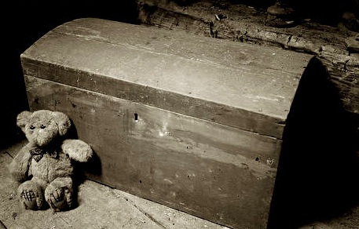

The Lost Chapter
I had recently found what may be considered to be a treasure stash of literature written by Briony Tallis. It seems as if Tallis had stored some drafts of her book. While most of these seem to have been ruined, I was able to restore a chapter from one of her drafts. It seems not to have been included in the completed text, as I restore more of these drafts and other works stored in the found documents, I will update here regurlarly.

It hadn't been long until I arrived at the station. A large shadowy building that seemed to vaguely resemble an industrial manufacturing building, somewhere in Northern London. I was guided through a few corridors, looking into empty rooms and hallways as I passed. After a short while, we were brought into a building lined with barber chairs and an accompanying barber. I can easily admit that my hair had grown quite long in prison, and accompanied with a relatively large beard, it took the barber assigned to me a painful glance, as well as a few extra minutes, until I could be prodded into the next room. Even though many other prison members where finished with their hair cuts before the others, no officer had said anything until the guards had made us all form into three lines and we had all finished getting our hair cut. I slowly shuffled into place, everyone's eyes fixed on the people walking through the door, waiting impatiently. When I, along with a few people walking weakly beside me, had finally gotten into our ranks, the officer who seemed to be in charge finally began speaking with an unusual amount of time between sentences.
"Today… You become a soldier… You will work… You will fight… You will take orders… It will be hard. You will see your friends die. But you must remember who you are fighting for. You lot might be fighting for other reasons than love for your country, but god knows you still want to stay alive. Tailors are now being brought into the room to take the dimensions of your torso, head, leg, and shoe. Your uniforms will be on your bunks by the time you come back from dinner. Training starts tomorrow."
Once the officer stepped down, talk began to come from everywhere. The guards at this point must have sensed it futile to attempt to get everyone to quiet down, and instead, ordered us down to our bunks. I glanced at an older man to my right, who had a scar running from the edge of his right eye and trailed under his lips to the other side of his face. I became quickly wide eyed and upon realizing this, averted my gaze.
Upon realizing I was staring at his scar, he said, "I got it in that hellhole we just came from, thank god we got out of there. What's your name?"
I answered, "Robbie, it's uhh, a pleasure to meet you."
I thought I saw him smirk as he said, "Sharpe, Richard Sharpe, at your service."
"I got a family history of the army... and jail at that. My great grandfather fought over with Wellington's troops. He was a damned right shot, a rifleman. Greencoats they called 'em."
I acted interested occasionally questioning him about trivial matters as we made our way to the dining hall.
I heard the engines of hundreds of trucks roar as I walked through the base camp to my assigned transport. Sharpe took the wheel of a truck while I loaded into the passenger side, forcing the newer recruits to the back.
Sharpe spoke, "Today is the day"
I nodded.
"Back to the lines. "
I nodded again looking out towards the sun, watching what looked like an endless amount of fields rolling by.
"You ready?"
I nodded, pulled out a cigarette, and replied, "I'm not sure about those new guys."
"They'll be fine, not much we can do. No doubt a good lot of 'em will die, but some people just aren't fit for these conditions, can't focus, listen to our advice." Conversation stayed meaningless, used as something to avoid the harsh realities we had to face, a distraction of what we knew we would have to endure until we heard the first few shells dropping in the distance.
After what seemed like a few more hours, even though Sharpe assured me it was only around a forty-five minute trip, we arrived at camp.
Rifle in hand, we strode to the assignment officer. He said in a thick Irish accent, "You two'ull be headen to the lines tonite."
"What?" I asked.
"I got it, let's go" said Sharpe.
I'm not ever really sure how it happens, or how I survive; it must be the exhaustion that climbs over me, and lulls me into a deep sleep, until either the sound of a nearby shell, or a soldier pushing me to retreat, wakes me up.
It was this same sleep I awoke from, to find Sharpe, oddly enough, relaxing quietly next to me.
I was launching grenades, a bucket next to me, following through the same motions over and over. The monotony took my mind off of what I was actually doing. The effort actually needed to launch each grenade was minimal, but after a bucket-full, I was always guaranteed at least a sweat, regardless of weather conditions. It wasn't until about the fifth bucket, when the agony of the same motion subsided, and grenade throwing brought a sense of peacefulness to the chaos.
I was speaking to Sharpe, pausing in between sentences to launch a grenade.
"I got a woman waiting for me at home."
"Named Cecilia."
"Hell I wish I could be with her now."
"Would be too if it weren't for that bitch."
"Accused me of rape and got me sent to prison."
"Had a god damned personal vendetta she did."
I ranted about for about five minutes, just speaking to get my mind off of the battle until a sergeant came by, "Hey soldier, we need more gunmen."
"Sorry sir, grenade duty."
"Call that lad you'd been talking to."
I turned to Sharpe, still unmoving where he was.
"Sharpe, they need you. Get going, I'll catch up with you later."
I waited a few seconds still to no response.
"Sharpe. Lets. Go."
I slowly turned him over, but recoiled quickly. His entire right side of his face had been blown off. Briony Tallis, A Lost Chapter
That's all I've managed to recover so far. Briony's decision to leave it out of her book is interesting to say the least. Check back later for updates.